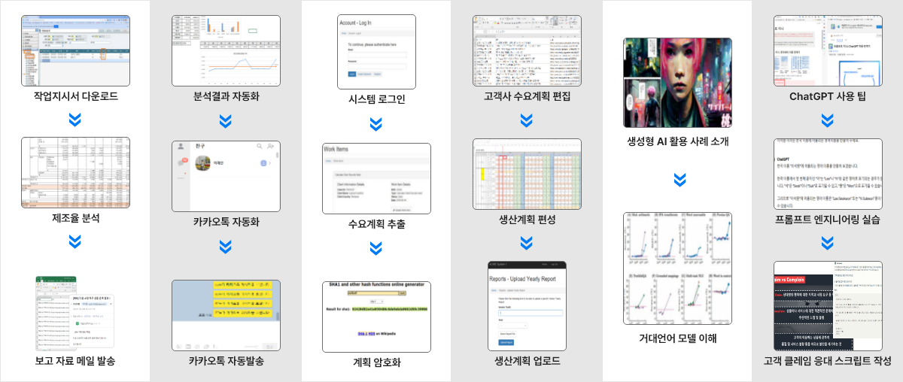
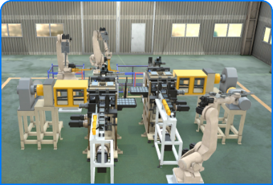
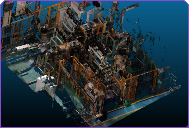
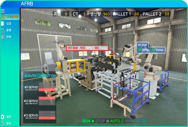

산업의 효율성 개선과 개발을 위한
[2기]산업디지털트윈 개발 과정
교육과정 특징
-
- Online 기반 자기 주도 학습
교육프로그램 개발
- Online 기반 자기 주도 학습
-
- PBL 기반 학습 교육프로그램 개발
-
- 오프라인 기반 학습 교육 프로그램
교육과정 주제
-
-
Subject
01 -
- 공장 내 자원의 실시간 정보 및 라인/공정간 운영정보를 수집
- 생산활동을 자동화하고 효율적인 생산운영 관리 구현하기 위한 실습교육으로 구성
-
-
-
Subject
02 -
- 제품의 개발단계의 관리계획과 품질관리기준이 양산과정으로 통합/연계되어 실질적인 품질관리활동 (부적합관리, 품질검사, 계측기/설비 검/교정 등)
- 실제적인 업무 진행을 위한 실습교육으로 구성
-
-
-
Subject
03 -
- 제조관리를 위한 작업스케쥴링, 제조공정 운영 모니터링, 실적, 분석을 위한 실습교육으로 구성
-
-
-
Subject
04 -
- 제조기업의 제품생산을 위한 설비운영에 대한 기존의 사후보전과 예방정비 방식으로부터 사전예측가능한 “예지보전방식”으로 변경
- 고장율, 유지보수율, 운영비용 감소효과를 얻을 수 있는 실제적인 업무 진행(모니터링, 수리점검이력, 고장예지 등)을 위한 실습교육으로 구성
-
- PBL기반 실무 프로젝트 교육 프로그램 설계 및 교육 컨텐츠 개발
[2기]산업디지털트윈 과정 상세 설명
- 제조기업의 Core 업무영역 < 판매/생산/자재/재무회계/관리회계 >에 대한 기업의 조직 구성체계 및 수행업무,
업무 영역간의 업무 연계, 주기적인 업무마감 및 결산 과정을 기본적으로 이해할 수 있다.
-
Subject 1: MOM(Manufacturing Operation Management) 생산제조운영
공장 내 자원의 실시간 정보 및 라인/공정간 운영정보를 수집, 생산활동을 자동화하고 효율적인 생산운영 관리 구현하기 위한 실습교육으로 구성
-
Subject 2: MOM(Manufacturing Operation Management) 품질관리
제품의 개발단계의 관리계획과 품질관리기준이 양산과정으로 통합/연계되어 실질적인 품질관리활동 (부적합관리, 품질검사, 계측기/설비 검/교정 등) 실제적인 업무 진행을 위한 실습교육으로 구성
-
Subject 3: MOM(Manufacturing Operation Management) 공정물류
공제조관리를 위한 작업스케쥴링, 제조공정 운영 모니터링, 실적, 분석을 위한 실습교육으로 구성
-
Subject 4: MOM(Manufacturing Operation Management) 설비관리
제조기업의 제품생산을 위한 설비운영에 대한 기존의 사후보전과 예방정비 방식으로부터 사전예측가능한 “예지보전방식”으로 변경하여 고장율, 유지보수율, 운영비용 감소효과를 얻을 수 있는 실제적인 업무 진행(모니터링, 수리점검이력, 고장예지 등)을 위한 실습교육으로 구성
자율형 공장 체계로 변모하게 하고 있는 첨단제조기업업무 프로세스 이해
-
제조업의 디지털 혁신을 통한 글로벌 경쟁력 이해
제조 공정 최적화 및 자동화를 통한 생산성 확보
공정 불량률 저감 활동 분석
-
신규 비즈니스 모델 창출
고객 맞춤형 제품 설계/생산의 신속한 대응 학습
고객만족도 및 시장에 대한 분석 이해
-
자율형 공장에 대한 기술 습득 및 이해
생성형 AI를 활용한 신제품 개발 시간 단축
AI기반 스마트공장 구축에 대한 현업 적응력 확보
제조업의 스마트공장 개념과 IoT적용 관련 업무 프로세스에 대한 이해 학습
-
레거시 시스템의 변화 추진 이해
-
기간계 시스템에 대한 사용, 관련 학습 이해
-
품질분석관련 학습을 통한 효율성 확보 학습
-
생산제조운영 최적화를 위한 기업 습득
-
ESG관련 회사의 방향성 확보 추진
-
디지털트윈, 생성형 AI 등에 대한 학습을 통해 현장 적용을 위한 매개체 역할 가능
IIoT를 기반으로 인더스트리 4.0을 구현한 스마트공장 개념도
제조업과 IOT의 결합이 4.0을 구현한 스마트공장 개념도
-
예측 유지 및 보수 측면에서 탁월
-
추적/모니터링기능을 통한 효율성 강화
-
생산 최적화 기여
-
에너지/자원 최적화 가능
-
디지털트윈을 통한 효율성 극대화/실현
- RPA(로봇 프로세스 자동화)는 반복적인 업무를 자동으로 처리하여 시간 절약, 정확성 향상, 효율성 증대 등의 이점을 제공하는 디지털 비서를 학습하게 됩니다.
Subject 1: MOM(Manufacturing Operation Management) 생산제조운영
- 제조기업의 Core 업무영역 < 판매/생산/자재/재무회계/관리회계 >에 대한 기업의 조직 구성체계 및 수행업무,
업무 영역간의 업무 연계, 주기적인 업무마감 및 결산 과정을 기본적으로 이해할 수 있다.
제조업의 디지털 트윈 적용 관련 업무 프로세스에 대한 이해 학습
-
AI 학습을 통한 생산관리 및 이상 감지
AI와 디지털 트윈을 통한 생산 예측
AI를 통한 생산 모니터링 및 이상 감지
-
AI학습을 통한 품질관리 및 이상 알림
품질모니터링
KPI 대시보드
이상 발생 모니터링
이상 발생 알림
-

생산공정라인의 현실 세계의 모델과 가상 세계의 Digital Twin 및 모니터링 화면 연계 개발
-

생산공정라인의 현실 세계의 모델과 가상 세계의 Digital Twin 및 모니터링 화면 연계 개발
-

생산공정라인의 현실 세계의 모델과 가상 세계의 Digital Twin 및 모니터링 화면 연계 개발
(51767 ) 경상남도 창원시 마산합포구 경남대학로 7 창조관 3층 스마트제조ICT사업단 (USG코딩오픈메타캠퍼스)
USG코딩오픈메타캠퍼스 센터는 경남대학교가 운영하고 있으며, 교육 및 업무에 대한 모든 책임은 경남대학교에 있습니다.
Copyrightⓒ USG코딩오픈메타캠퍼스 센터 ALL RIGHT RESERVED